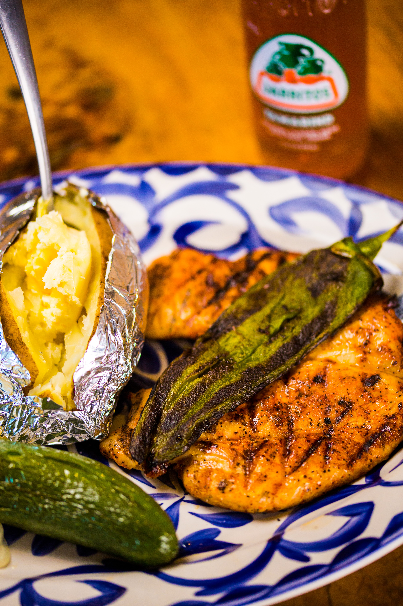

LOADED BAKED POTATOES

Ingredients
6 russet POTATOES
12 strips bacon
1 pound brocolli flour
1 cup diced red bell pepper
half cup water
1 cup sour cream
1 teaspoon salt
Steps
Preheat the oven to 400 degrees F (200 degrees C).
Pierce each potato with a paring knife and roast in the oven until tender, about 1 hour, depending on the size of your potatoes.
Meanwhile, dice up bacon. Heat a saute pan over medium heat and cook bacon until crispy, about 7 minutes. Remove bacon and set aside, leaving bacon fat in the pan.
Return the saute pan with reserved bacon fat to the heat. Cook broccoli and red pepper for 2 minutes. Add water and allow to cook until water has evaporated. Remove from heat and set aside.
When potatoes are done cooking, remove and allow to cool enough to handle. Cut them in half and scoop out a portion of the insides with a spoon, leaving about a 1/4-inch border on the skins.
Mix scooped-out potato with 1/2 of the bacon, broccoli-red pepper mixture, sour cream, salt, pepper, and 1/2 of the Cheddar together in a bowl.
Divide the filling and add it back into the potato skins.
Divide the filling and add it back into the potato skins.